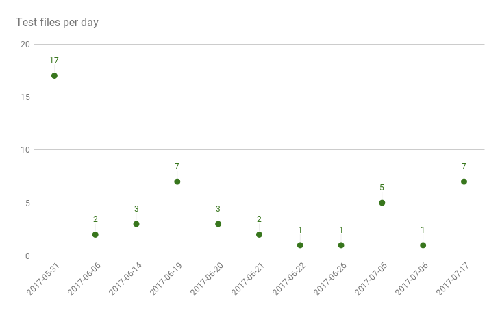

Fancy React
React Super Powers in Atom
Eddie Sholl @eddiesholl
atom.io/packages/fancy-react
It might help you
It might encourage you
It might remind you
write react code
to hack on something
that tools really matter
Modular
Precise
Flexible
Files
Verbose
Standards
The Atom experience
No context switching
Active and mature
Please come and hack me!


That's great
Now show me something awesome
Actions
Generate component from JSX snippet
Generate tests
Switch between source <-> test file
Commands
Key bindings
Menus
Activation
keymaps json
{
"atom-workspace atom-text-editor[data-grammar='source js jsx']": {
"ctrl-alt-g": "fancy-react:generate",
"ctrl-alt-t": "fancy-react:tests",
"ctrl-alt-s": "fancy-react:switch"
}
}
Atom ecosystem
Package Manager - APM
Chrome dev tools
Jasmine test runner
Other juicy stuff
Format using your eslintrc
Generates tests for all exports
Support for jest, enzyme, react props
Local config in package.json
eslint WTF?!
eval, new Function(), json parsing
const { allowUnsafeNewFunction } = require("loophole")
const e = this.engine
let config
allowUnsafeNewFunction(function() {
config = e.getConfigForFile(filePath)
})
const linterResult = this.linter.verifyAndFix(
text,
config
)https://github.com/AtomLinter/linter-eslint/issues/253
We need to talk...
about ASTs
Once upon a time, an unsuspecting Mozilla engineer created an API in Firefox that exposed the SpiderMonkey engine's JavaScript parser as a JavaScript API. Said engineer documented the format it produced, and this format caught on as a lingua franca for tools that manipulate JavaScript source code.
https://github.com/estree/estree
interface Function <: Node {
id: Identifier | null;
params: [ Pattern ];
body: FunctionBody;
}
// es5 variable
interface VariableDeclaration <: Declaration {
type: "VariableDeclaration";
declarations: [ VariableDeclarator ];
kind: "var";
}
// es2015 variables
extend interface VariableDeclaration {
kind: "var" | "let" | "const";
}interface JSXElement <: Expression {
type: "JSXElement";
openingElement: JSXOpeningElement;
children: [ JSXText | JSXExpressionContainer |
JSXSpreadChild | JSXElement ];
closingElement: JSXClosingElement | null;
}
interface JSXAttribute <: Node {
type: "JSXAttribute";
name: JSXIdentifier | JSXNamespacedName;
value: Literal | JSXExpressionContainer |
JSXElement | null;
}Peeling the Javascript Onion
Browser time!
Your Babel/Webpack
Your React
Atom
My babel and eslint
Generated Javascript snippets
My plugin code
😱 🆘 🚒 TypeScript 🚒 🆘 😱

Tastes like regular onion
ES6
JSX
Experimental features
TypeScript
AST
Browser output
ClosureScript
Elm
AST
Browser output
Thank you
atom.io/packages/fancy-react